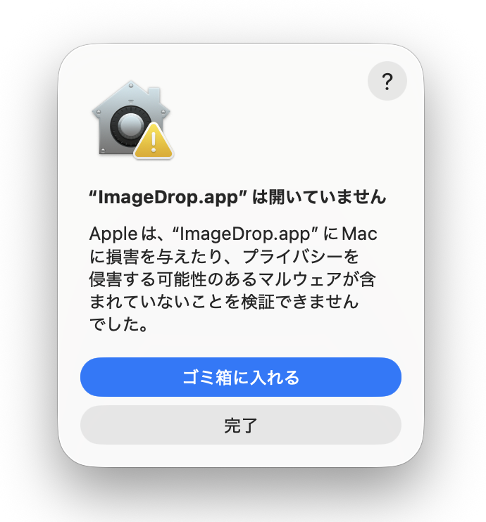
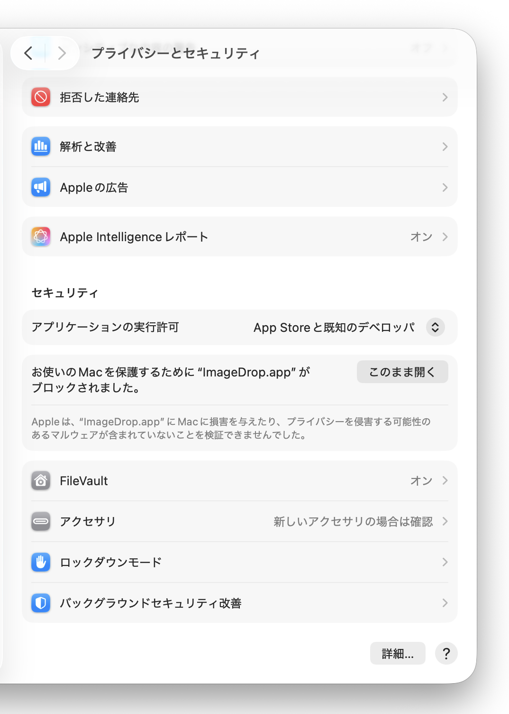
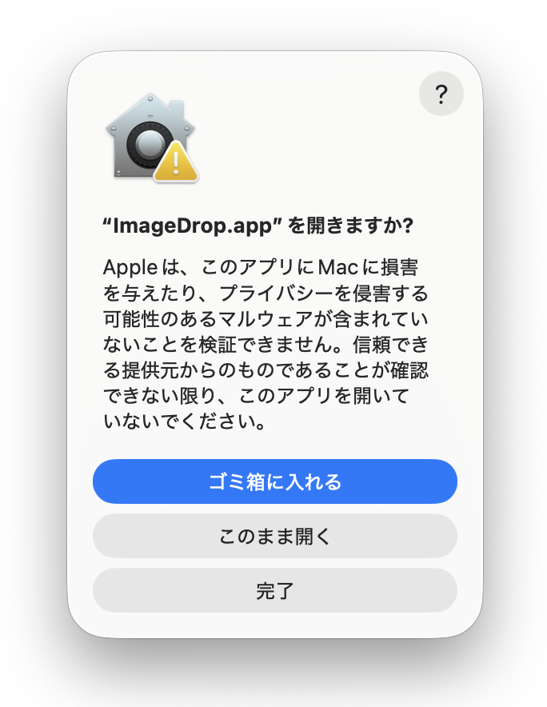

IMG_1234.HEIC
- 形式
- HEIC
- 画像サイズ
- 4032 × 3024
- 元画像
- そのまま保持
IMAGE CONVERTER FOR MAC
HEICをドロップするだけ。JPEGへの変換も、ちょうどよい大きさへの縮小・圧縮も、まとめて済みます。
無料 · macOS 14 Sonoma以降 · Apple Silicon / Intel Mac対応
変換サイトも、画像編集ソフトも開かない。
保存先や品質を変換のたびに指定する必要はありません。既定の設定で、使いやすいJPEGを元画像の隣につくります。
元画像と同じフォルダへ保存
1枚でも、複数枚でもまとめて選べます。
画面またはDockアイコンに落とすと、すぐに始まります。
_compressed.jpg が元画像の隣にできます。
PRIVATE BY DESIGN
変換はすべてMacの中で完結します。アカウントも、クラウドへのアップロードも必要ありません。
ネット上の変換サービスを経由せず、Apple標準フレームワークでローカル処理します。
初期設定では、EXIFやGPS、撮影日時などのメタデータを出力へコピーしません。
変換後は別名のJPEGとして保存。元の写真は変更せず、そのまま残します。
FAQ
ダウンロード前に知っておきたいことをまとめました。
はい。画像変換はMacの中で完結し、クラウドへのアップロードやアカウント作成はありません。
HEIC、HEIF、JPEG、JPG、PNGに対応しています。出力はJPEGです。複数枚もまとめて処理できます。
元画像は変更しません。同じフォルダに 元の名前_compressed.jpg として保存し、同名ファイルがあれば連番を付けます。
はい。最大長辺とJPEG品質は設定画面で変更できます。初期値は最大長辺1980px、品質0.85です。小さな画像は拡大しません。
個人開発のため、現在のアプリはApple Developer IDによる署名・Apple公証を行っていません。信頼できる配布元から取得したことを確認したうえで、下記の手順で起動を許可してください。
初回起動の前に
GitHub ReleasesからダウンロードしたDMGであることを確認してから、次の順に操作してください。
以下は旧名称「ImageDrop.app」時代の画面です。現在のアプリでも、macOSでの許可手順は同じです。

「開いていません」と表示されたら［完了］を選びます。

［システム設定］→［プライバシーとセキュリティ］で［このまま開く］を選びます。

確認画面でも［このまま開く］を選びます。次回からは通常どおり起動できます。